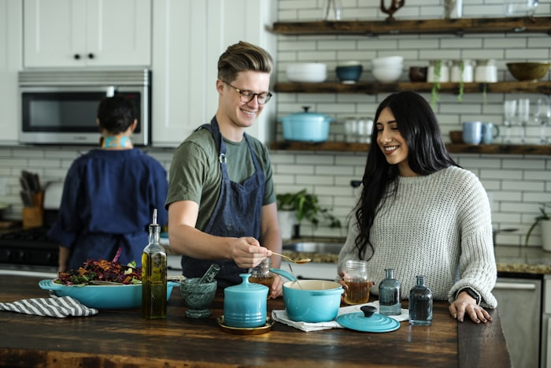
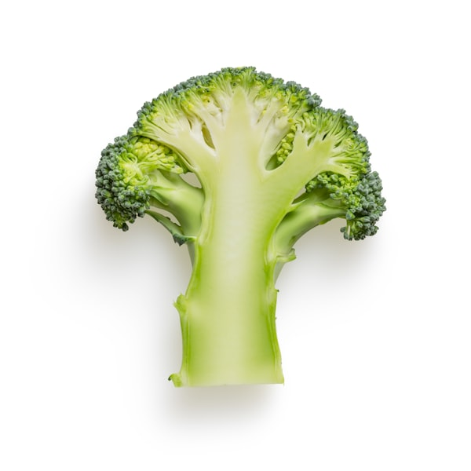
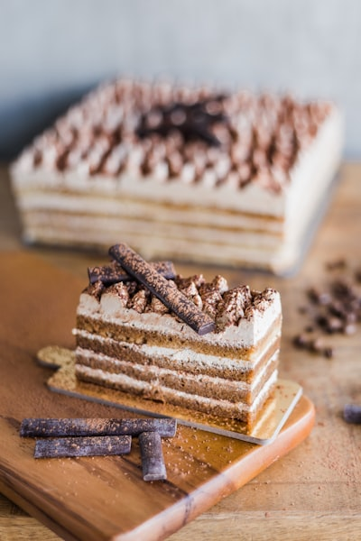
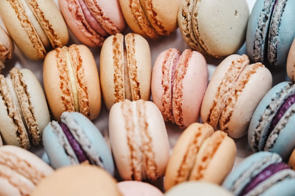

Our Story, Our Passion
Every macaron is an act of love — born from a commitment to French tradition, fine ingredients, and the joy of sharing something beautiful.

Born in Paris, Shared with the World
Liora began in 2015 when our founder, Chef Isabelle Moreau, returned from her training at the prestigious École Lenôtre in Paris with one dream — to share the art of the authentic French macaron with the world.
What started as a small kitchen with a single baking tray has grown into a beloved artisan patisserie, shipping handcrafted macarons to thousands of customers across the globe. Every batch is still made by hand, with the same attention to detail and the same French recipes that first won our customers' hearts.
We believe that a great macaron is more than a confection — it's an experience, a moment of joy, a connection to the centuries-old tradition of French pastry excellence.
Our Core Values
These principles guide every macaron we bake, every customer we serve, and every relationship we build.

Uncompromising Quality
We source only the finest French ingredients — Valrhona chocolate, Sicilian pistachios, and fresh seasonal produce — to deliver macarons that exceed expectations.

Crafted with Passion
Every macaron shell is piped, matured, and filled by hand. Our chefs treat each order as a work of art, ensuring perfection in texture, flavor, and appearance.

Community First
We partner with local suppliers, support artisan food festivals, and donate macaron boxes to community events. We believe great food brings people together.

Sustainable Practices
Our packaging is 100% recyclable, we use carbon-neutral shipping where possible, and maintain a zero-waste kitchen with composting programs.

Continuous Innovation
Our chefs experiment constantly — introducing surprising flavor pairings, collaborating with local chefs, and keeping our menu fresh and exciting every season.

Customer Delight
From the first click to the last macaron, we obsess over the customer experience — beautiful packaging, reliable shipping, and warm, personal service.
Milestones That Shaped Us
Liora Founded
Chef Isabelle opens a 12-seat tea salon in the 1st arrondissement of Paris, serving hand-crafted macarons alongside fine teas.
First Online Store Launch
Liora launches nationwide shipping, reaching 500 orders in the first month and winning Best New Artisan brand at the Paris Food Festival.
Rose Box Subscription Launched
The beloved monthly macaron subscription box debuts, growing to 2,000 active subscribers within 6 months.
International Expansion
We launch international shipping to 18 countries and open a second kitchen in New York City to serve the North American market.
10,000 Masterclass Students
We celebrate our 10,000th pastry masterclass student and are named one of the Top 50 Artisan Food Businesses in Europe.
The Hands Behind Every Macaron
Our dedicated team of French-trained pâtissiers bring passion and precision to every batch they create.

Chef Isabelle Moreau
École Lenôtre graduate with 15 years of experience. Named one of France's Top 10 Pastry Chefs in 2022.

Chef Marc Dubois
Responsible for our monthly flavor rotations. Former chocolatier at Ladurée Paris with a specialization in exotic ingredient pairings.
Sophie Laurent
Leads our exclusive Pastry Masterclasses. Expert in classical French techniques and seasonal menu development.